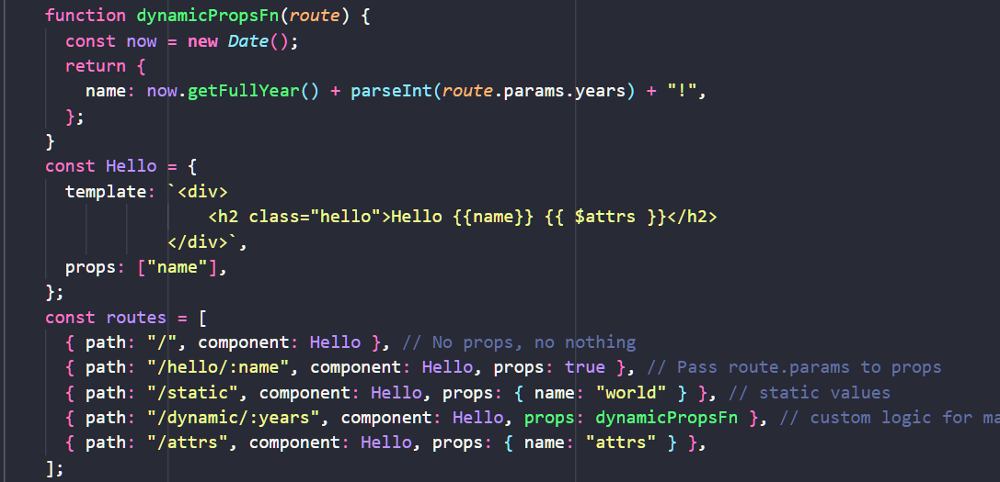

Route props
-
/ 【 path: "/", component: Hello 】, // No props, no nothing
-
/hello/you【 path: "/hello/:name", component: Hello, props: true
】, // Pass route.params to props
-
/static【 path: "/static", component: Hello, props: 【 name:
"world" 】 】, // static values
-
/dynamic/1 【 path: "/dynamic/:years", component: Hello, props:
dynamicPropsFn 】, // custom logic for mapping between route and
props
-
/attrs 【 path: "/attrs", component: Hello, props: 【 name: "attrs"
】 】,
